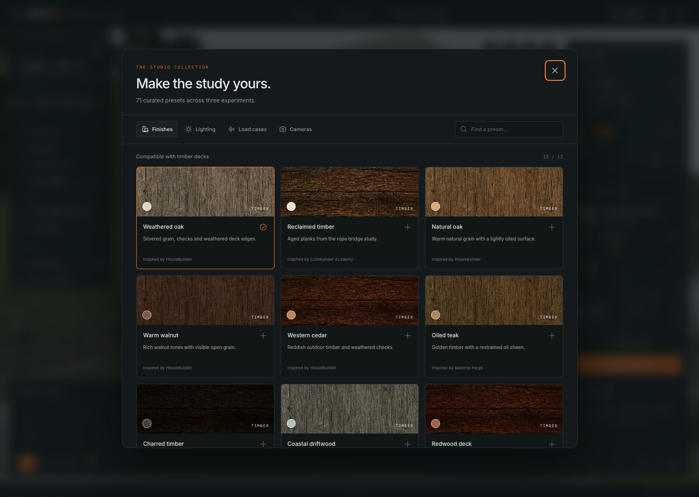
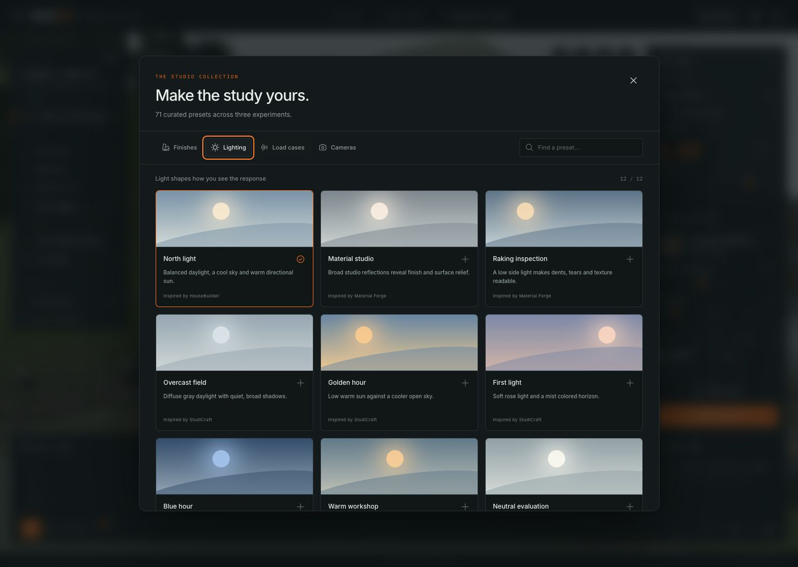
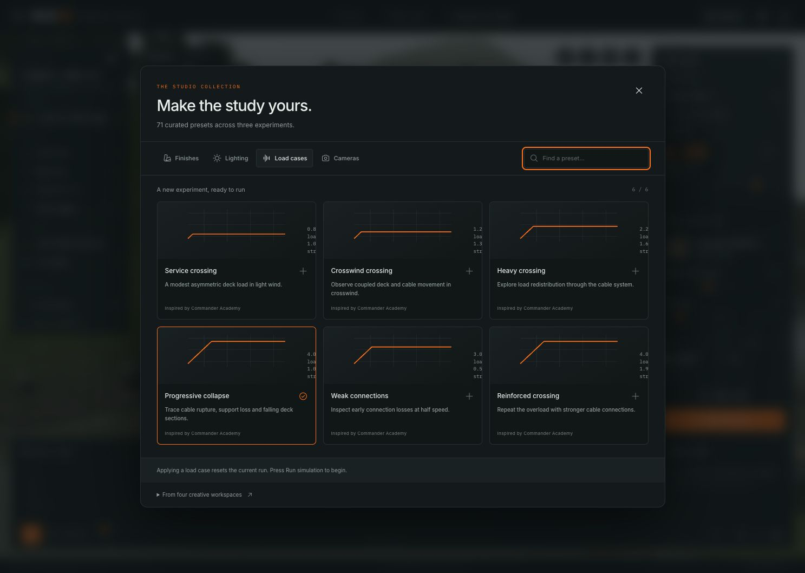

36 surface finishes
Textiles, metals and timber, filtered to the active specimen. Source maps are recorded in the provenance manifest.
Inspect the scene work, failure states and 71 curated starting points.
References are generated concepts. Current captures show real geometry and recorded solver output. The phone views use a 390 × 844 browser viewport on this desktop GPU. Technical verification does not imply photographic equivalence or calibrated engineering accuracy.

Textiles, metals and timber, filtered to the active specimen. Source maps are recorded in the provenance manifest.

Study a surface under softboxes, raking light, overcast skies, golden hour and evening light.

Prepare a fresh experiment and inspect it from an overview, reverse, close, plan or elevation view.